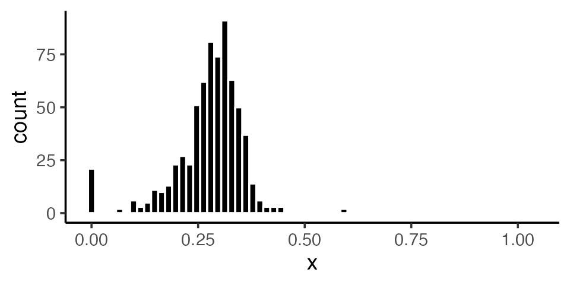
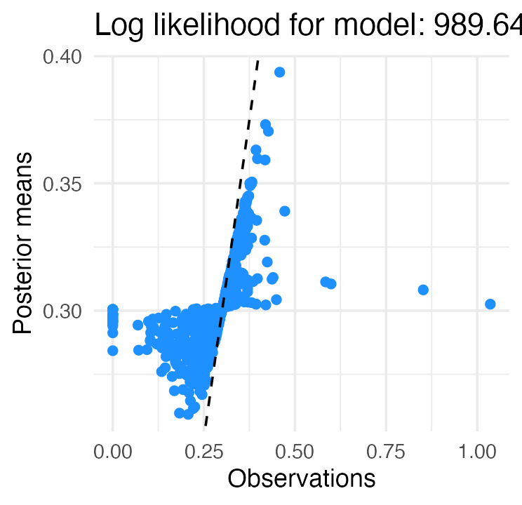
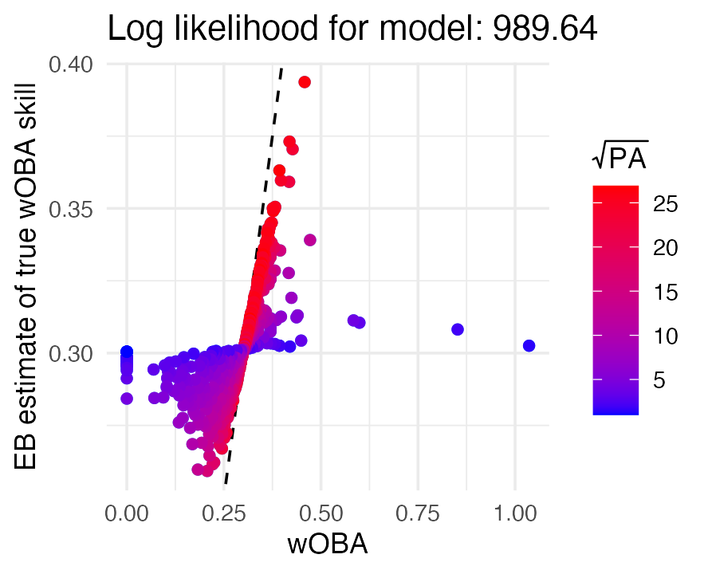
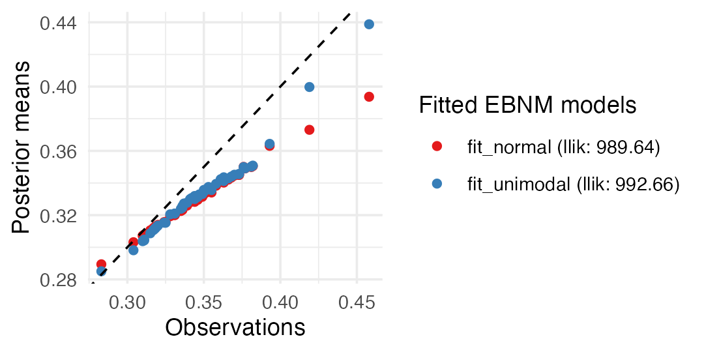
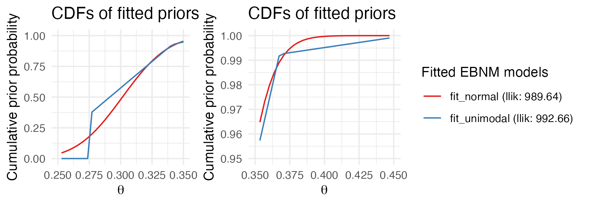
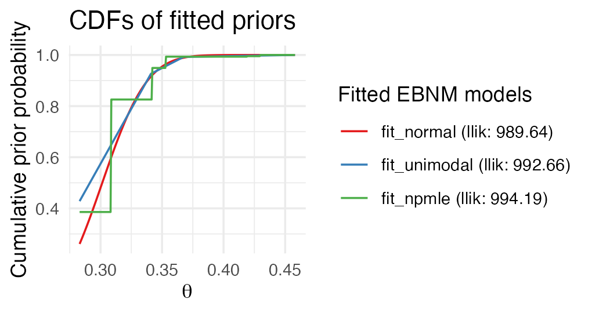
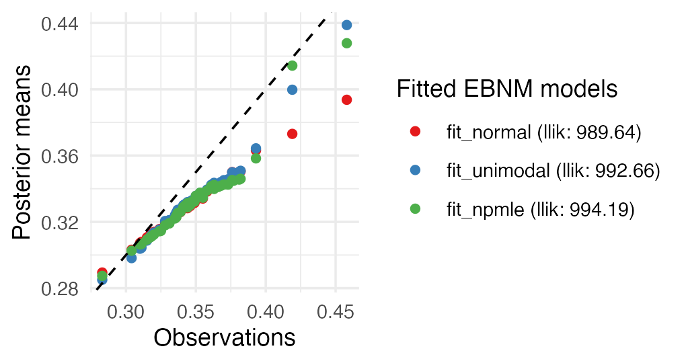

vignettes/baseball.Rmd
baseball.RmdIn this vignette, we illustrate the key features of ebnm in an analysis of baseball statistics.
We begin by loading and inspecting the wOBA data set,
which consists of wOBAs (“weighted on-base averages”) and standard
errors for the 2022 MLB regular season:
library("ebnm")
data("wOBA")
nrow(wOBA)
head(wOBA)
# [1] 688
# FanGraphsID Name Team PA x s
# 1 19952 Khalil Lee NYM 2 1.036 0.733
# 2 16953 Chadwick Tromp ATL 4 0.852 0.258
# 3 19608 Otto Lopez TOR 10 0.599 0.162
# 4 24770 James Outman LAD 16 0.584 0.151
# 5 8090 Matt Carpenter NYY 154 0.472 0.054
# 6 15640 Aaron Judge NYY 696 0.458 0.024Column “x” contains the observed wOBAs, which we interpret as estimates of a player’s hitting ability. Column “s” gives standard errors. (See below for background on the wOBA statistic and details on how standard errors were calculated.)
The overall distribution of wOBAs appears as follows:
library("ggplot2")
ggplot(wOBA, aes(x = x)) +
geom_histogram(bins = 64, color = "white",fill = "black") +
theme_classic()
As the histogram shows, most players finished the season with a wOBA between .200 and .400. A few had very high wOBAs (>.500), while others had wOBAs at or near zero. A casual inspection of the data suggests that players with these extreme wOBAs were simply lucky (or unlucky). For example, the 4 players with the highest wOBAs each had fewer than 20 plate appearances. (The number of plate appearances, or PAs, is the sample size over which wOBA is measured for each hitter, so smaller numbers of PAs are generally associated with larger standard errors.) It is unlikely that these players would have sustained their high level of production over a full season’s worth of PAs!
In contrast, Aaron Judge’s production — which included a record-breaking number of home runs — appears to be “real,” since it was sustained over nearly 700 PAs. Other cases are more ambiguous: how, for example, are we to assess Matt Carpenter, who had several exceptional seasons between 2013 and 2018 but whose output steeply declined in 2019–2021 before his surprising “comeback” in 2022? An empirical Bayes analysis can help to answer this and other questions.
Function ebnm() is the main interface for fitting the
empirical Bayes normal means model; it is a “Swiss army knife” that
allows for various choices of prior family \(\mathcal{G}\) as well as providing multiple
options for fitting and tuning models. For example, we can fit a normal
means model with \(\mathcal{G}\) taken
to be the family of normal distributions as follows:
x <- wOBA$x
s <- wOBA$s
names(x) <- wOBA$Name
names(s) <- wOBA$Name
fit_normal <- ebnm(x, s, prior_family = "normal", mode = "estimate")(The default behavior is to fix the prior mode at zero. Since we
certainly do not expect the distribution of true hitting ability to have
a mode at zero, we set mode = "estimate".)
The ebnm package has a second model-fitting interface in
which each prior family gets its own function:
fit_normal <- ebnm_normal(x, s, mode = "estimate")Textual and graphical overviews of results can be obtained using the
summary() and plot() methods. The
summary() method appears as follows:
summary(fit_normal)
#
# Call:
# ebnm_normal(x = x, s = s, mode = "estimate")
#
# EBNM model was fitted to 688 observations with _heteroskedastic_ standard errors.
#
# The fitted prior belongs to the _normal_ prior family.
#
# 2 degrees of freedom were used to estimate the model.
# The log likelihood is 989.64.
#
# Available posterior summaries: _mean_, _sd_.
# Use method fitted() to access available summaries.
#
# A posterior sampler is _not_ available.
# One can be added via function ebnm_add_sampler().The plot() method visualizes results, comparing the
“observed” values \(x_i\) (the initial
wOBA estimates) against the empirical Bayes posterior mean estimates
\(\hat{\theta}_i\):
plot(fit_normal)
The dashed line shows the diagonal \(x = y\), which makes shrinkage effects clearly visible. In particular, the most extreme wOBAs on either end of the spectrum are strongly shrunk towards the league average (around .300).
Since the plot() method returns a “ggplot” object (Wickham 2016), the plot can be conveniently
customized using ggplot2. For example, we can vary the
color of points by the number of plate appearances:
plot(fit_normal) +
geom_point(aes(color = sqrt(wOBA$PA))) +
labs(x = "wOBA", y = "EB estimate of true wOBA skill",
color = expression(sqrt(PA))) +
scale_color_gradient(low = "blue", high = "red")
The plot tells us that wOBAs associated with fewer plate appearances (blue points) were shrunk toward the league average much more strongly than wOBAs for hitters with many plate appearances (red points).
Let us revisit the first 6 hitters in the data set to see what the EBNM model suggests about their true hitting ability. The method returns a posterior summary for each hitter (by default, the posterior mean and standard deviation):
print(head(fitted(fit_normal)), digits = 3)
# mean sd
# Khalil Lee 0.303 0.0287
# Chadwick Tromp 0.308 0.0286
# Otto Lopez 0.310 0.0283
# James Outman 0.311 0.0282
# Matt Carpenter 0.339 0.0254
# Aaron Judge 0.394 0.0184Estimates for the first four ballplayers are shrunk strongly toward the league average, reflecting the fact that these players had very few plate appearances. Carpenter had many more plate appearances (154) than these other four players, but according to this model we should remain skeptical about his strong performance; after factoring in the prior, we judge his “true”’’” talent to be much closer to the league average, downgrading an observed wOBA of .472 to the posterior mean estimate of .339.
Judge’s “true” talent is also estimated to be much lower (.394) than
his observed wOBA (.458) despite sustaining this high level of
production over a full season (696 PAs). For this reason, one might ask
whether a prior that is more flexible than the normal prior — that is, a
prior that can better adapt to “outliers” like Judge — might produce a
different result. The ebnm package is very well suited
to answering this question. For example, to obtain results using the
family of all unimodal priors rather than a normal prior, we need only
update the argument to prior_family:
fit_unimodal <- ebnm(x, s, prior_family = "unimodal", mode = "estimate")It is straightforward to produce a side-by-side visualization of the
fitted models simply by including both models as arguments to the
plot() method. We also use the subset argument
to focus on the results for Judge and other players with the most plate
appearances:
top50 <- order(wOBA$PA, decreasing = TRUE)
top50 <- top50[1:50]
plot(fit_normal, fit_unimodal, subset = top50)
This plot illustrates the ability of the unimodal prior to better adapt to the data: estimates for players with many plate appearances and outlying performances (very high or very low wOBAs) are not adjusted quite so strongly toward the league average. Judge’s estimated “true” talent, for example, remains much closer to his observed wOBA:
dat <- cbind(wOBA[, c("PA","x")],
fitted(fit_normal),
fitted(fit_unimodal))
names(dat) <- c("PA", "x", "mean_n", "sd_n", "mean_u", "sd_u")
print(head(dat), digits = 3)
# PA x mean_n sd_n mean_u sd_u
# Khalil Lee 2 1.036 0.303 0.0287 0.302 0.0277
# Chadwick Tromp 4 0.852 0.308 0.0286 0.307 0.0306
# Otto Lopez 10 0.599 0.310 0.0283 0.310 0.0315
# James Outman 16 0.584 0.311 0.0282 0.311 0.0318
# Matt Carpenter 154 0.472 0.339 0.0254 0.355 0.0430
# Aaron Judge 696 0.458 0.394 0.0184 0.439 0.0155Carpenter’s estimated “true” talent is also higher, but is still adjusted much more than Judge’s in light of Carpenter’s smaller sample size. Interestingly, the unimodal prior also assigns greater uncertainty (the ``sd_u’’ column) to Carpenter’s estimate than does the normal prior.
Recall that the two normal means models differ only in the priors
used, so we can understand the differences in the shrinkage behavior of
these models by inspecting the priors. Calling plot() with
incl_cdf = TRUE shows the cumulative distribution functions
(CDFs) of the fitted priors \(\hat{g}\). Since we are particularly
interested in understanding the differences in shrinkage behavior for
large wOBAs such as Judge’s, we create a second plot that zooms in on
the interval between .350 and .450:
library("cowplot")
p1 <- plot(fit_normal, fit_unimodal, incl_cdf = TRUE, incl_pm = FALSE) +
xlim(c(.250, .350)) +
guides(color = "none")
p2 <- plot(fit_normal, fit_unimodal, incl_cdf = TRUE, incl_pm = FALSE) +
lims(x = c(.350, .450), y = c(0.95, 1))
plot_grid(p1, p2, nrow = 1, ncol = 2, rel_widths = c(1,2))
The plot on the right shows that the fitted normal prior has almost no mass above .400, explaining why Judge’s estimate is shrunk so strongly toward the league average, whereas the unimodal prior is flexible enough to permit posterior estimates above .400.
The posterior means and standard errors returned from the
ebnm() call cannot be used to obtain credible intervals
(except for the special case of the normal prior). Therefore, we provide
additional methods quantile() and confint(),
which return, respectively, posterior quantiles and posterior credible
intervals, defined as the narrowest continuous intervals \([a_i, b_i]\) such that the “true mean”
\(\theta_i\) is in \([a_i, b_i]\) with posterior probability at
least \(1 - \alpha\), where \(\alpha \in (0, 1)\). Both methods are
implemented using Monte Carlo techniques, which can be slow for large
data sets, so credible intervals are not computed by default.
We add a Monte Carlo sampler using function
ebnm_add_sampler(); alternatively, we could have added a
sampler in our initial calls to ebnm() by specifying
output = output_all(). We then compute, 80% credible
intervals for the EBNM model with unimodal prior, setting a seed for
reproducibility:
fit_unimodal <- ebnm_add_sampler(fit_unimodal)
set.seed(1)
print(head(confint(fit_unimodal, level = 0.8)), digits = 3)
# CI.lower CI.upper
# Khalil Lee 0.277 0.328
# Chadwick Tromp 0.277 0.334
# Otto Lopez 0.277 0.336
# James Outman 0.277 0.335
# Matt Carpenter 0.277 0.389
# Aaron Judge 0.428 0.458Interestingly, the 80% credible interval for Carpenter is very wide, and shares the same lower bound as the first four ballplayers (who, recall, have very few plate appearances).
Above, we demonstrated how the ebnm package makes it is
easy to perform EBNM analyses with different types of priors, then
compared results across two different choices of prior family. Each of
these families makes different assumptions about the data which, a
priori, may be more or less plausible. An alternative to prior
families that make specific assumptions about the data is to use the
prior family that contains all distributions \(\mathcal{G}_{\mathrm{npmle}}\), which is in
a sense “assumption free.” Note that although nonparametric priors
require specialized computational techniques, switching to a
nonparametric prior is seamless in ebnm, as these
implementation details are hidden. Similar to above, we need only make a
single change to the prior_family argument:
fit_npmle <- ebnm(x, s, prior_family = "npmle")(Note that because the family \(\mathcal{G}_{\mathrm{npmle}}\) is not
unimodal, the mode = "estimate" option is not relevant
here.)
Although the implementation details are hidden by default, it can
sometimes be helpful to see what is going on “behind the scenes,”
particularly for flagging or diagnosing issues. By default, ebnm uses
the mixsqp package (Kim et al. 2020) to
fit the NPMLE \(\hat{g} \in
\mathcal{G}_{\mathrm{npmle}}\). We can monitor convergence of the
mix-SQP optimization algorithm by setting the verbose
control argument to TRUE:
fit_npmle <- ebnm(x, s, prior_family = "npmle",
control = list(verbose = TRUE))
# Running mix-SQP algorithm 0.3-54 on 688 x 95 matrix
# convergence tol. (SQP): 1.0e-08
# conv. tol. (active-set): 1.0e-10
# zero threshold (solution): 1.0e-08
# zero thresh. (search dir.): 1.0e-14
# l.s. sufficient decrease: 1.0e-02
# step size reduction factor: 7.5e-01
# minimum step size: 1.0e-08
# max. iter (SQP): 1000
# max. iter (active-set): 20
# number of EM iterations: 10
# Computing SVD of 688 x 95 matrix.
# Matrix is not low-rank; falling back to full matrix.
# iter objective max(rdual) nnz stepsize max.diff nqp nls
# 1 +9.583407733e-01 -- EM -- 95 1.00e+00 6.08e-02 -- --
# 2 +8.298700300e-01 -- EM -- 95 1.00e+00 2.87e-02 -- --
# 3 +7.955308369e-01 -- EM -- 95 1.00e+00 1.60e-02 -- --
# 4 +7.819858634e-01 -- EM -- 68 1.00e+00 1.05e-02 -- --
# 5 +7.753787534e-01 -- EM -- 53 1.00e+00 7.57e-03 -- --
# 6 +7.717040208e-01 -- EM -- 49 1.00e+00 5.73e-03 -- --
# 7 +7.694760705e-01 -- EM -- 47 1.00e+00 4.48e-03 -- --
# 8 +7.680398878e-01 -- EM -- 47 1.00e+00 3.58e-03 -- --
# 9 +7.670690681e-01 -- EM -- 44 1.00e+00 2.91e-03 -- --
# 10 +7.663865515e-01 -- EM -- 42 1.00e+00 2.40e-03 -- --
# 1 +7.658902386e-01 +6.493e-02 39 ------ ------ -- --
# 2 +7.655114904e-01 +5.285e-02 19 1.00e+00 9.88e-02 20 1
# 3 +7.627839841e-01 +1.411e-02 7 1.00e+00 1.28e-01 20 1
# 4 +7.626270875e-01 +2.494e-04 7 1.00e+00 3.23e-01 8 1
# 5 +7.626270755e-01 +1.748e-08 7 1.00e+00 4.94e-04 2 1
# 6 +7.626270755e-01 -2.796e-08 7 1.00e+00 2.76e-07 2 1
# Optimization took 0.03 seconds.
# Convergence criteria met---optimal solution found.This output shows no issues with convergence of the optimization algorithm; the mix-SQP algorithm converged to the solution (up to numerical rounding error) in only 6 iterations (not counting the 10 initial EM iterations). In some cases, convergence issues can arise when fitting nonparametric models to large or complex data sets, and revealing the details of the optimization can help to pinpoint these issues.
Let us visually compare the three fits obtained so far:
plot(fit_normal, fit_unimodal, fit_npmle, incl_cdf = TRUE, subset = top50)
As before, estimates largely agree, differing primarily at the tails. Both the unimodal prior family and the NPMLE are sufficiently flexible to avoid the strong shrinkage behavior of the normal prior family.
Fits can be compared quantitatively using the logLik()
method, which, in addition to the log likelihood for each model,
usefully reports the number of free parameters (i.e., degrees of
freedom):
A nonparametric prior \(\mathcal{G}\) is approximated by \(K\) mixture components on a fixed grid, with mixture proportions to be estimated. We can infer from the above output that the family of unimodal priors has been approximated by a family of mixtures over \(K = 41\) fixed components, while \(\mathcal{G}_\text{npmle}\) has been approximated as a family of mixtures over a grid of \(K = 95\) point masses spanning the range of the data. (The number of degrees of freedom is one fewer than \(K\) because the mixture proportions must always sum to 1, which removes one degree of freedom from the estimation of \({\boldsymbol{\pi}}\).)
The default behaviour for nonparametric prior families is to choose
\(K\) such that the likelihood obtained
using estimate \(\hat{g}\) should be
(on average) within one log-likelihood unit of the optimal estimate from
among the entire nonparametric family \(\mathcal{G}\) (see
Willwerscheid 2021). Thus, a finer approximating grid should not
yield a large improvement in the log-likelihood. We can check this by
using ebnm_scale_npmle() to create a finer grid:
scale_npmle <- ebnm_scale_npmle(x, s, KLdiv_target = 0.001/length(x),
max_K = 1000)
fit_npmle_finer <- ebnm_npmle(x, s, scale = scale_npmle)
logLik(fit_npmle)
logLik(fit_npmle_finer)
# 'log Lik.' 994.193 (df=94)
# 'log Lik.' 994.2504 (df=528)As the theory predicts, a much finer grid, with \(K = 529\), results in only a modest
improvement in the log-likelihood. ebnm provides
similar functions ebnm_scale_unimix() and
ebnm_scale_normalmix() to customize grids for,
respectively, unimodal and normal scale mixture prior families.
One potential issue with the NPMLE is that, since it is discrete (as
the above CDF plot makes apparent), observations are variously shrunk
toward one of the support points, which can result in poor interval
estimates. For illustration, we calculate 80% intervals using 10% and
90% quantiles (note that this is not the same as using the
confint() method with level = 0.8, since
confint() returns the narrowest continuous
intervals covering 80% of the posterior probability):
fit_npmle <- ebnm_add_sampler(fit_npmle)
print(head(quantile(fit_npmle, probs = c(0.1, 0.9))), digits = 3)
# 10% 90%
# Khalil Lee 0.276 0.342
# Chadwick Tromp 0.276 0.342
# Otto Lopez 0.276 0.342
# James Outman 0.276 0.342
# Matt Carpenter 0.309 0.430
# Aaron Judge 0.419 0.430Each interval endpoint is constrained to lie at one of the support points of the NPMLE \(\hat{g}\). The interval estimate for Judge strikes us as far too narrow. Indeed, the NPMLE can sometimes yield degenerate interval estimates:
confint(fit_npmle, level = 0.8, parm = "Aaron Judge")
# CI.lower CI.upper
# Aaron Judge 0.4298298 0.4298298To address this and other issues, the deconvolveR package (Narasimhan and Efron 2020) uses a penalized likelihood that encourages “smooth” priors \(\hat{g}\); that is, priors \(\hat{g}\) for which few of the mixture proportions are zero:
fit_deconv <- ebnm_deconvolver(x / s, output = ebnm_output_all())
plot(fit_deconv, incl_cdf = TRUE, incl_pm = FALSE)
Note however that since package deconvolveR fits a
model to \(z\)-scores rather than
observations and associated standard errors, the “true” means \(\theta\) being estimated are \(z\)-scores rather than raw wOBA skill.
While this may be
reasonable in many settings, it does not seem appropriate for the wOBA
data:
print(head(confint(fit_deconv, level = 0.8) * s), digits = 3)
# CI.lower CI.upper
# Khalil Lee 0.000 1.600
# Chadwick Tromp 0.563 1.127
# Otto Lopez 0.442 0.796
# James Outman 0.412 0.742
# Matt Carpenter 0.413 0.531
# Aaron Judge 0.406 0.459These interval estimates do not match our basic intuitions; for example, a wOBA over .600 has never been sustained over a full season.
A longstanding tradition in empirical Bayes research is to include an analysis of batting averages using data from Major League Baseball; see, for example, Brown (2008); Jiang and Zhang (2010); Gu and Koenker (2017). Until recently, batting averages were the most important measurement of a hitter’s performance, with the prestigious yearly “batting title” going to the hitter with the highest average. However, with the rise of baseball analytics, metrics that better correlate to teams’ overall run production have become increasingly preferred. One such metric is wOBA (“weighted on-base average”), which is both an excellent measure of a hitter’s offensive production and, unlike competing metrics such as MLB’s xwOBA (Sharpe 2019) or Baseball Prospectus’s DRC+ (Judge 2019), can be calculated using publicly available data and methods.
Initially proposed by Tango, Lichtman, and Dolphin (2006), wOBA assigns values (“weights”) to hitting outcomes according to how much the outcome contributes on average to run production. For example, while batting average treats singles identically to home runs, wOBA gives a hitter more than twice as much credit for a home run. (Note that weights are updated from year to year, but wOBA weights for singles have remained near 0.9 for the last several decades, while weights for home runs have hovered around 2.0; see FanGraphs (2023).)
Given a vector of wOBA weights \(\mathbf{w}\), hitter \(i\)’s wOBA is the weighted average \[ x_i = \mathbf{w}^\top \mathbf{z}^{(i)} / n_i, \] where \(\mathbf{z}^{(i)} = (z_1^{(i)}, \ldots, z_7^{(i)})\) tallies outcomes (singles, doubles, triples, home runs, walks, hit-by-pitches and outs) over the hitter’s \(n_i\) plate appearances (PAs). Modeling hitting outcomes as i.i.d. \[ \mathbf{z}^{(i)} \sim \text{Multinomial}(n_i, \mathbf{\pi}^{(i)}), \] where \(\mathbf{\pi}^{(i)} = (\pi_1, \ldots, \pi_7^{(i)})\) is the vector of “true” outcome probabilities for hitter \(i\), we can regard \(x_i\) as a point estimate for the hitter’s “true wOBA skill”, \[ \theta_i = \mathbf{w}^\top \mathbf{\pi}^{(i)}. \] Standard errors for the \(x_i\)’s can be estimated as \[ s_i^2 = \mathbf{w}^\top \hat{\mathbf{\Sigma}}^{(i)} \mathbf{w}/n_i, \] where \(\hat{\mathbf{\Sigma}}^{(i)}\) is the estimate of the covariance matrix for the multinomial model obtained by setting \(\mathbf{\pi} = \hat{\mathbf{\pi}}\), where \[ \hat{\mathbf{\pi}}^{(i)} = \mathbf{z}^{(i)}/n_i. \] (To deal with small sample sizes, we conservatively lower bound each standard error by the standard error that would be obtained by plugging in league-average event probabilities \(\hat{\mathbf{\pi}}_{\mathrm{lg}} = \sum_{i=1}^N \mathbf{z}^{(i)}/ \sum_{i=1}^N n_i\), where \(N\) is the number of hitters in the data set.)
The relative complexity of wOBA makes it well suited for analysis via ebnm. With batting average, a common approach is to obtain empirical Bayes estimates using a beta-binomial model (see, for example, Robinson (2017)). With wOBA, one can estimate hitting outcome probabilities by way of a Dirichlet-multinomial model; alternatively, one can approximate the likelihood as normal and fit an EBNM model directly to the observed wOBAs. We take the latter approach.
The following R version and packages were used to generate this vignette:
sessionInfo()
# R version 4.3.2 (2023-10-31)
# Platform: aarch64-apple-darwin20 (64-bit)
# Running under: macOS Monterey 12.3
#
# Matrix products: default
# BLAS: /Library/Frameworks/R.framework/Versions/4.3-arm64/Resources/lib/libRblas.0.dylib
# LAPACK: /Library/Frameworks/R.framework/Versions/4.3-arm64/Resources/lib/libRlapack.dylib; LAPACK version 3.11.0
#
# locale:
# [1] en_US.UTF-8/en_US.UTF-8/en_US.UTF-8/C/en_US.UTF-8/en_US.UTF-8
#
# time zone: America/New_York
# tzcode source: internal
#
# attached base packages:
# [1] stats graphics grDevices utils datasets methods base
#
# other attached packages:
# [1] cowplot_1.1.3 ggplot2_3.4.4 ebnm_1.1-20
#
# loaded via a namespace (and not attached):
# [1] sass_0.4.8 utf8_1.2.4 generics_0.1.3 ashr_2.2-63
# [5] stringi_1.8.3 lattice_0.21-9 digest_0.6.34 magrittr_2.0.3
# [9] RColorBrewer_1.1-3 evaluate_0.23 grid_4.3.2 fastmap_1.1.1
# [13] jsonlite_1.8.8 Matrix_1.6-1.1 mixsqp_0.3-54 purrr_1.0.2
# [17] fansi_1.0.6 scales_1.3.0 truncnorm_1.0-9 invgamma_1.1
# [21] textshaping_0.3.7 jquerylib_0.1.4 cli_3.6.2 rlang_1.1.3
# [25] deconvolveR_1.2-1 munsell_0.5.0 splines_4.3.2 withr_2.5.2
# [29] cachem_1.0.8 yaml_2.3.8 tools_4.3.2 SQUAREM_2021.1
# [33] memoise_2.0.1 dplyr_1.1.4 colorspace_2.1-0 vctrs_0.6.5
# [37] R6_2.5.1 lifecycle_1.0.4 stringr_1.5.1 fs_1.6.3
# [41] trust_0.1-8 ragg_1.2.7 irlba_2.3.5.1 pkgconfig_2.0.3
# [45] desc_1.4.3 pkgdown_2.0.7 bslib_0.6.1 pillar_1.9.0
# [49] gtable_0.3.4 glue_1.7.0 Rcpp_1.0.12 systemfonts_1.0.5
# [53] highr_0.10 xfun_0.41 tibble_3.2.1 tidyselect_1.2.0
# [57] rstudioapi_0.15.0 knitr_1.45 farver_2.1.1 htmltools_0.5.7
# [61] labeling_0.4.3 rmarkdown_2.25 compiler_4.3.2 horseshoe_0.2.0